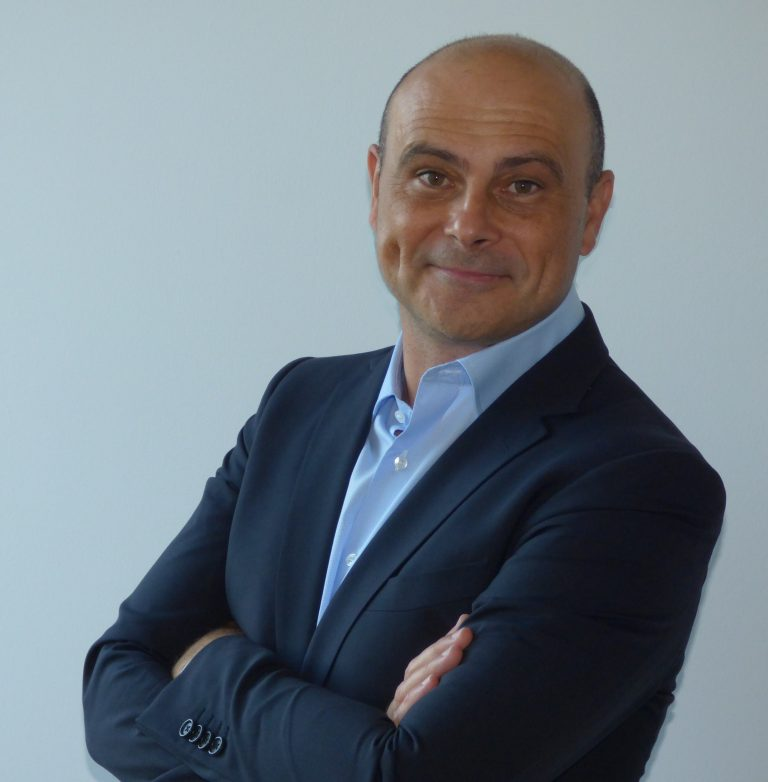
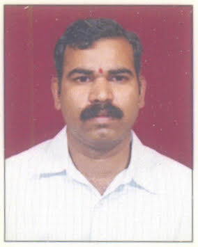

Speakers

Dr. Jaume Anguera
IEEE Fellow, Founder and CTO at Ignion;
Associate Professor (Profesor Titular),
Electronics and Telecommunication Engineering, Universitat Ramon LLull
https://users.salle.url.edu/~jaume.anguera/
Jaume Anguera is the founder of and CTO at Ignion.
Prior to this he was the
Partner and R&D Manager at Fractus, Barcelona, Spain.
He is also serving as
Associate Professor at Universitat Ramon LLull, Barcelona, Spain.
He is an IEEE
Antennas and Propagation Distinguished Lecturer. He holds more than 150
patents.
His biography is listed in Who´sWho in the World, Who´sWho in
Engineering.
Author of more than 250 scientific widely cited papers and international conferences with citations above 7500, h-index 50, and i10 index of 150. Author of 6 books. He has participated in more than 21 competitive research projects financed by the Spanish Ministry . He is the author of 6 books, directed more than 100 bachelor and master thesis and 3 Ph.Ds. He is inventor of Virtual Antenna™ technology, which enables full functional multi-band wireless connectivity to wireless devices through miniature and off-the-shelf antenna boosters. He has taught more than 20 antenna courses around the world (USA, China, Korea, India, UK, France, Poland, Czech Republic, Tunisia, Spain). With over 21 years of R&D experience, he has developed part of his professional experience with Fractus in South Korea in the design of miniature antennas for large Korean companies such as Samsung and LG. He has received several national and international awards. He is associate editor of the IEEE Open Journal on Antennas and Propagation, Electronics Letters, International Journal of Electronics and Communications, and reviewer in several IEEE and other scientific journals. He is vice-chair of the working group “Software and Modeling” at EurAAP.
. . . . . . . . . . . . . . . . . . . .
“Antenna Booster Technology: From Fundamentals to Applications”
Abstract
Addressed to Antenna, Microwave, RF, Wireless, Electronics, Engineers to learn about Antenna Booster Technology and how to design wireless devices with antenna boosters. Antenna boosters are off-the-shelf electrically small components that can be integrated inside any wireless device for operation at any frequency band (0.4GHz-10.6GHz) through the proper design of a matching network. The antenna booster frequency bands of operation are easily adjusted—not by modifying its geometry but through the proper matching-network design. This is a simpler, faster, and more familiar method for RF/microwave and wireless engineers, who are acquainted with the design of matching networks at every single stage of a telecommunication system for example, filters, and amplifiers. Attendants will learn the physical insights of antenna boosters and how to design wireless devices (ex. IoT) embedding antenna boosters covering from single band to multi-band applications either using passive and active matching network-based architectures. The presentation will give a general overview of the fundamentals of antenna booster till recent applications of antenna booster embedded in IoT devices.

Dr.P.Laxminarayana
Principal Scientist/Professor and Director
Research and Training Unit for Navigational Electronics,
Osmania University
Hyderabad 500 007
INDIA
. . . . . . . . . . . . . . . . . . . .
"Navigation of Natural Flyers and Autonomous Navigation for UAVs and MAVs"
Abstract
Drones and Unmanned Aerial Vehicles (UAVs) due to their multifarious applications is incessantly attracting the attention of scientists, engineers and academicians and throwing challenges to improvisation of technology. There is a growing interest in the media, literature and across all sections for various applications which include military, surveillance, surveying and mapping, rescue operations, industries, agriculture, entertainment like marriage parties. In spite of a lot of developments and research progress in the area of autonomous navigation for Drones, UAVs and Micro aerial vehicles (MAVs), we are not yet competing with the navigation of natural flyers. The birds travel from one continent to another continent and land up in the same nest in the next year. Similarly the small insects leave their nest in the morning for food and wander for kilometers together and come back in the evening without any difficulty. So there is a lot of scope for learning from the natural flyers like birds and insects for development of autonomous navigation. Several methods used by the natural flyers for navigation are mentioned, but only few of them are understood to adapt them to incorporate them in the navigation methods developed by the human beings. So in this talk a comparative analogy will be drawn on methods and techniques used by the natural flyers visa-vis manmade technologies along with a note on the present state of art.
Celia Shahnaz
Ph.D. SMIEEE, FIEB
Professor, Department of EEE, BUET
2022 IEEE WIE Committee Chair-Elect
2021-23 Chair, IEEE Signal Processing Society (SPS) Women in Signal Processing Committee
2021-22 Member, IEEE History Committee
2021-22 Member, IEEE Educational Activities Board, Faculty Resource Committee
2022, 20 Member, IEEE New Initiative Committee
2020 Chair, Women in SIGHT Working Group
2017, 2019 Communications Chair, IEEE SIGHT steering Committee
2017-2021 IEEE PES Women in Power (WiP) R10 representative
2016 IEEE Region 10 WIE Coordinator
2018-6/2021 Chair, IEEE Bangladesh Section
2018-21 Editorial board member, IET Signal Processing
General Chair, IEEE TENSYMP 2020, SPICSCON 2019, PEEIACON 2019
General Co- Chair, IEEE Region 10 HTC 2017 , Founder, TPC Chair, General Chair/Co-chair: IEEE WIECON-ECE 2015-20, TPC Chair, IEEE BECITHCON 2019, RAAIACON 2019
. . . . . . . . . . . . . . . . . . . .
"Deep Learning Applications for Medical Image Analysis"
Abstract
To treat the diseases or injuries of the joints, bones, muscles, and spine in both adult and pediatric imaging, the 2-D musculoskeletal radiographs bring a significant depth of expertise. Various machine learning processes have played a significant role in medical image classification and abnormality detection from musculoskeletal radiographs . There are other 2-D images that are utilized for Tuberculosis, COVID 19 detection. Many Deep learning Networks, such as Densenet, Resnet, Inception v3, and Capsnet architecture will be explained here for musculoskeletal radiographs abnormality detection and other life threatening diseases detection . Such computer-aided Deep learning based automatic detection of abnormality and diseases is time-saving, and more accurate thus creates a huge impact on the community and humanity.